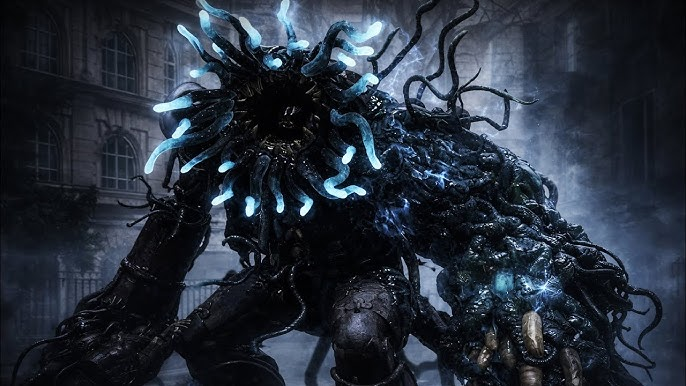

Corrupted Parade Master
Returning to Krat Central Station later in the game reveals a grim sight. The once-imposing Parade Master has been completely overtaken by the Petrification Disease, turning into a grotesque Carcass. A mutated appendage now controls its rotting frame, making its movements much more erratic and dangerous than your first encounter.
Combat Tips
Unlike the original fight, his attacks now inflict Decay, which will quickly eat away at your weapon durability and health. He also summons a crawling minion from his body to attack or uses it as a weapon. Fire damage is incredibly effective here. Important: You cannot summon a Specter for this fight, so you must rely entirely on your own Perfect Guards, dodging, and Fire Abrasives.
Combat Stats
- Type: Carcass
- Weakness: Fire
- Resistance: Acid / Decay
- Location: Krat Central Station Plaza
- Summon: Not Available
- Drop: Full Moonstone, Quartz